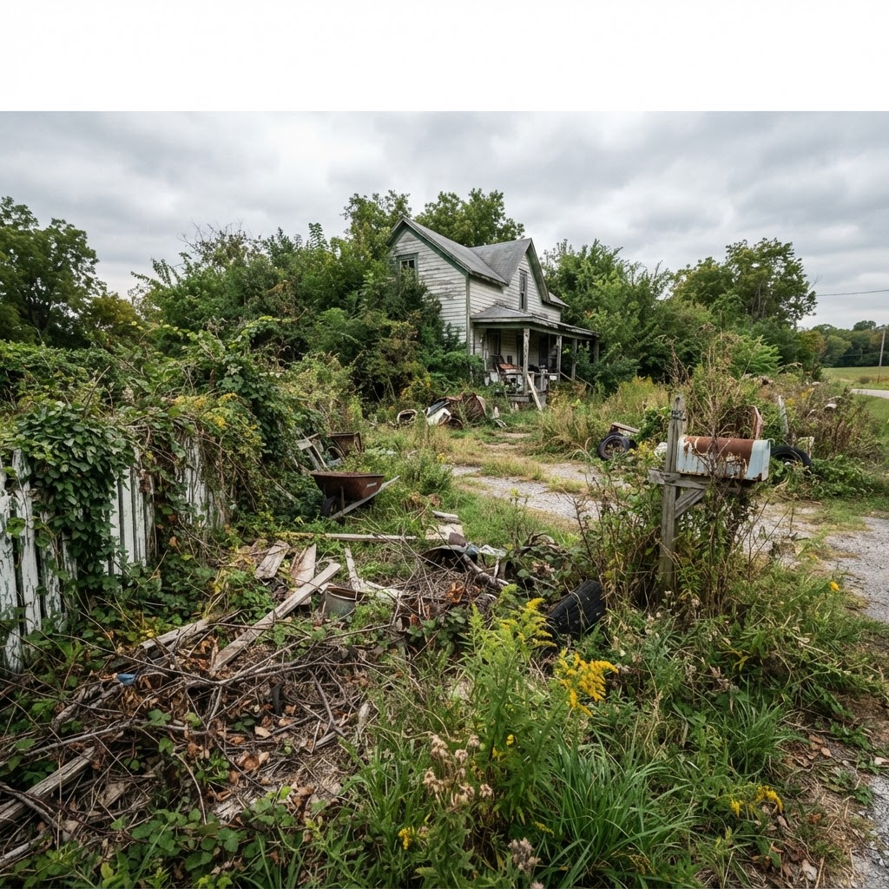
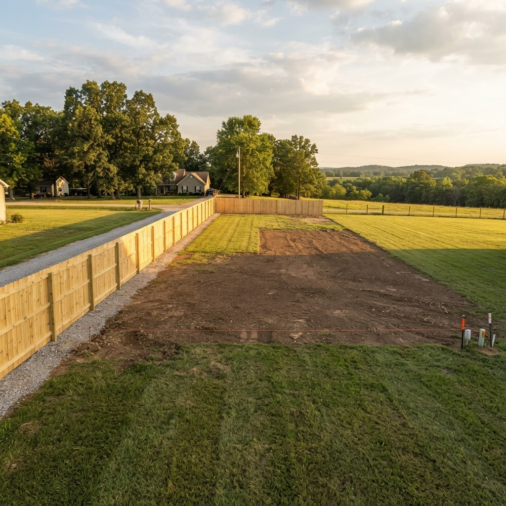
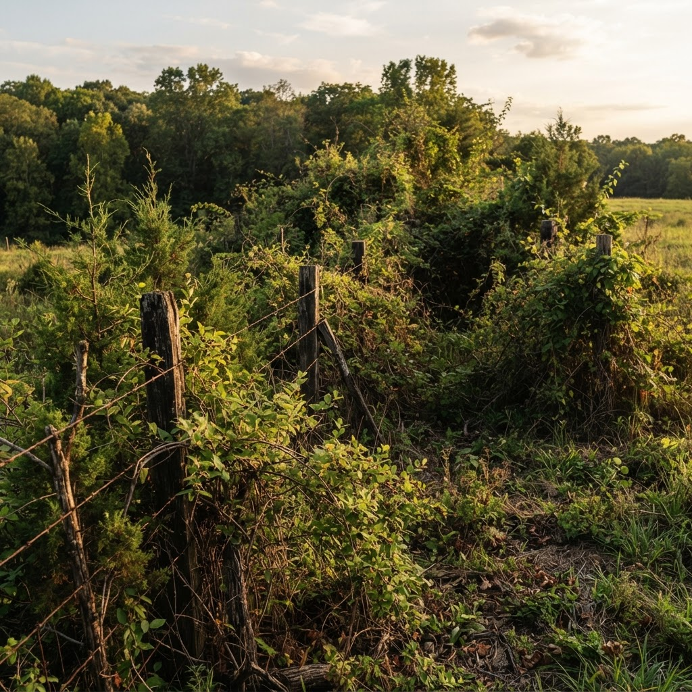
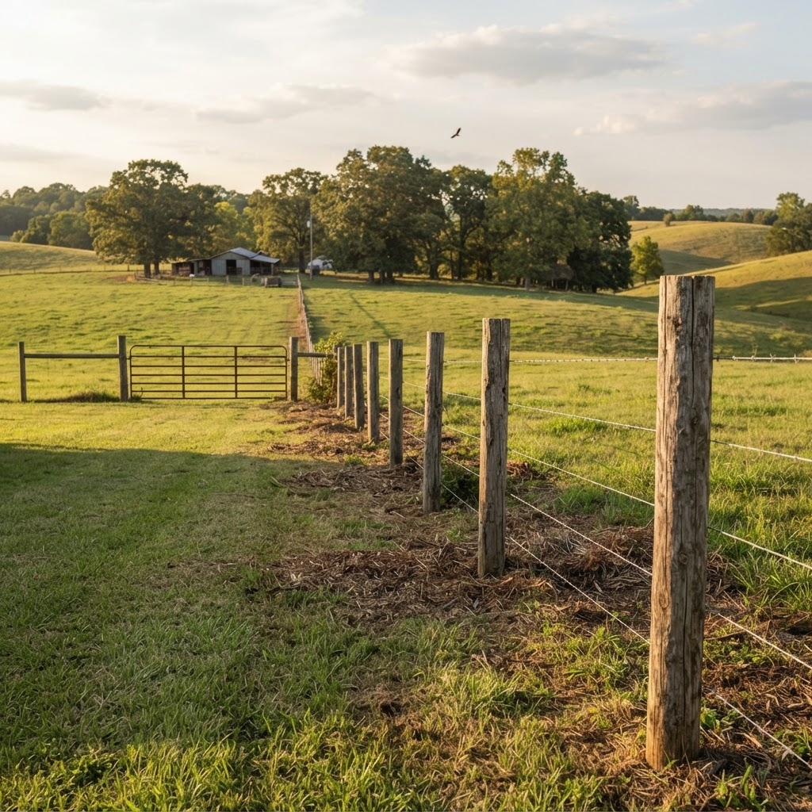

Jefferson County, Missouri
We take it backto workable ground.
Clear Build Maintain
Land clearing, retaining walls, masonry, decks, junk removal and mowing — one crew for the whole property, from the first cut to the standing schedule.
Call or text — we get back to you the same day.
- Jefferson County based
- Free estimates
- Same-day callback
- Debris hauled off
Three things, done properly
Clear. Build. Maintain.
Most properties need all three eventually. Most contractors only do one. That gap is where jobs stall, and it's why we run the whole line.
Clear
Take it back to workable ground. Overgrowth, scrub, silted-in drainage and everything in the way of what comes next.
- Land Clearing
- Brush Clearing
- Ditch Clearing
Build
Put something permanent in its place — walls that hold grade, masonry that lasts, and structures sized for the slope you have.
- Retaining Walls
- Brick & Masonry Work
- Decks & Outdoor Construction
Maintain
Keep it that way. Mowing on a schedule, seasonal clean-ups, and hauling off whatever accumulates.
- Lawn Care & Yard Management
- Junk Removal
- General Property Maintenance
What we do
Nine services, one number
Land Clearing
Lots, acreage and building pads cleared and left ready to work.
See detailsBrush Clearing
Overgrowth, thickets and scrub cut back and hauled out.
See detailsDitch Clearing
Drainage reopened so water leaves your property, not sits on it.
See detailsRetaining Walls
Block and stone walls that hold grade and drain properly.
See detailsBrick & Masonry Work
Brick, block and stone — new work and repairs.
See detailsDecks & Outdoor Construction
Decks, steps, landings and the structures around them.
See detailsLawn Care & Yard Management
Mowing, trimming and edging on a schedule you can forget about.
See detailsJunk Removal
Hauled off in one trip — yard, garage, outbuilding or lot.
See detailsGeneral Property Maintenance
One number for keeping the whole property in shape.
See detailsThe difference
Before & after
Drag the handle. On clearing work the transformation is the product — which is why the photos matter more than the words.




How it works
No mystery, no runaround
You call or text
Tell us what you're looking at. Photos help. We'll tell you same day whether it's something we do.
We walk the property
Free, on site, at a time that works. We look at access, slope, drainage and what's actually under the growth.
You get it in writing
A written estimate with the scope spelled out — including whether the job needs a permit and who pulls it.
We schedule it
You get a date and a window, and we tell you if weather moves it. Ground conditions matter more than the calendar in this work.
We finish and clean up
Debris hauled off, not stacked in a corner. You walk it with us before we leave.
Timing
The right work, the right month
Missouri ground dictates the schedule. Clearing in frozen January soil beats clearing in April mud every time — and we'll tell you when waiting saves you money.
Where we work
Jefferson County, Missouri
From the Arnold subdivisions to the back forty in Grubville. Highlighted towns are our core area.
Tell us what you're looking at.
Free estimate, same-day callback, and a written scope before anything starts.
Questions
Straight answers
Do you charge for an estimate?
No. Estimates are free, and for most jobs we'll come walk the property rather than guess from the road. If you can send photos of an overgrown lot, we can often get you a ballpark before we ever drive out.
How fast can you get out here?
Call or text and we'll get back to you the same day. Scheduling depends on the season — mowing books up in spring, clearing books up in late fall — so the earlier you call for seasonal work, the better the slot.
What areas do you cover?
Jefferson County, Missouri and the immediate edges of it — Arnold, Festus, Hillsboro, Imperial, High Ridge, House Springs, Barnhart, De Soto, Cedar Hill, Pevely, Herculaneum, Byrnes Mill and the communities between them. If you're just outside the county line, ask anyway.
When is the best time to clear land?
November through February. Frozen or firm ground carries equipment without rutting or compacting your soil, the vegetation is dormant so there's far less debris, and with no leaf canopy we can actually see the lot. Fall is the second-best window. Spring is the worst — it's mud.
Do I need a permit?
Sometimes. Jefferson County requires a land disturbance permit once you disturb roughly 5,000 sq ft, exceed an acre, or cut or fill 5 feet or more. Retaining walls over 4 feet from the bottom of the footing generally need a permit and an engineer's stamp in this region, and cities within the county set their own thresholds on top of that. We'll tell you what your job needs before you commit.
Do you do commercial and rental properties?
Yes — vacant lots, rentals, small commercial sites and HOA common ground. Standing schedules available for anything recurring.
What does mowing season look like in Missouri?
April through late October, roughly. Peak growth is April to June, then cool-season fescue and bluegrass slow down in the July–August heat. Early September is the right window for aeration and overseeding, and leaves need to be off the lawn before snow mold sets in around November.
How do I get a quote?
Call or text (314) 634-6630, or fill out the form on the contact page. Tell us what you need, where you are, and send a photo if you've got one — a picture of an overgrown lot is worth ten minutes of description.